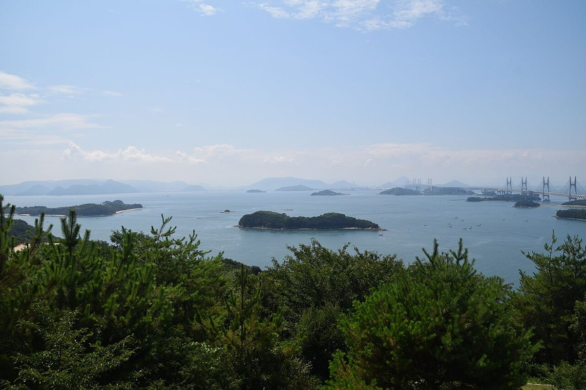

うたパン工房
愛知県知多郡阿久比町
営業時間: 準備中(お問い合わせください)

掲載写真はフリー素材のイメージで、店舗の実際の商品・外観・風景ではありません。撮影地は国内・他地域(海外を含む)・不明が混在します。
ページをめくる
パンや麦のイメージ写真をならべています。お店の実際の商品ではありません。



掲載写真はフリー素材のイメージで、店舗の実際の商品・外観・風景ではありません。撮影地は国内・他地域(海外を含む)・不明が混在します。
お店のこと
| 店名 | うたパン工房 |
|---|---|
| 住所 | 愛知県知多郡阿久比町矢高五反田33-1 |
| 電話 | 0569-48-1023 |
| @utapan_1023 | |
| 営業時間 | 準備中(お問い合わせください) |
| 定休日 | 準備中(お問い合わせください) |
| 駐車場 | 準備中(お問い合わせください) |
準備中の項目は、決まり次第ご案内します。お急ぎの場合は、お電話でお問い合わせください。
ご来店前のご確認は、お電話で
営業時間や取り扱いなど、気になることはお気軽にお問い合わせください。
背景の写真はフリー素材のイメージです。